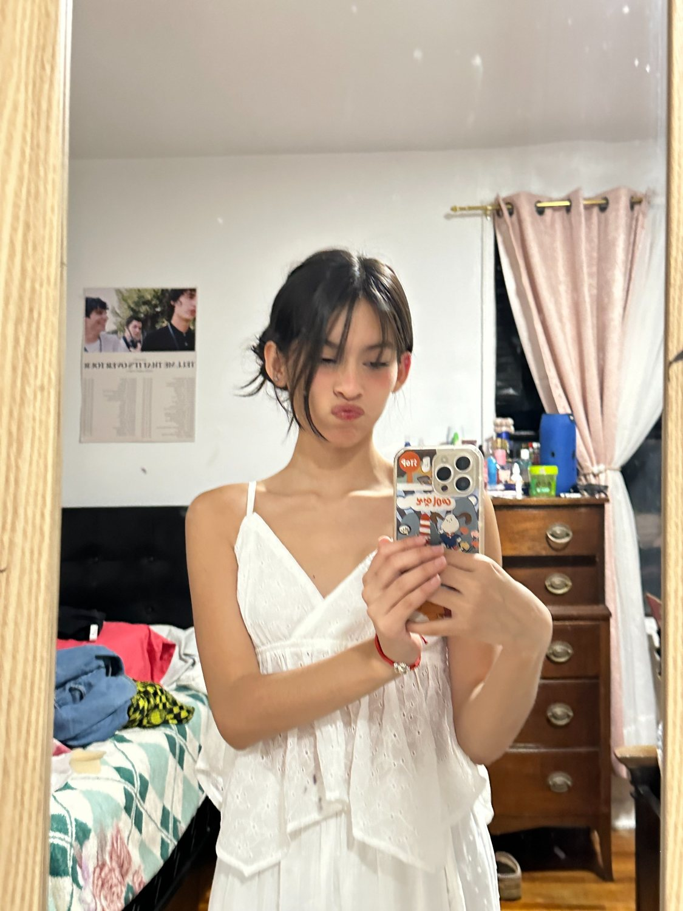

The Question
“Better for whom?”
Your reflection tilts her head. “For the people who notice your mistakes. For the people you’re afraid to disappoint.” You feel a familiar ache. She offers her hand, but a small voice behind you calls your name.